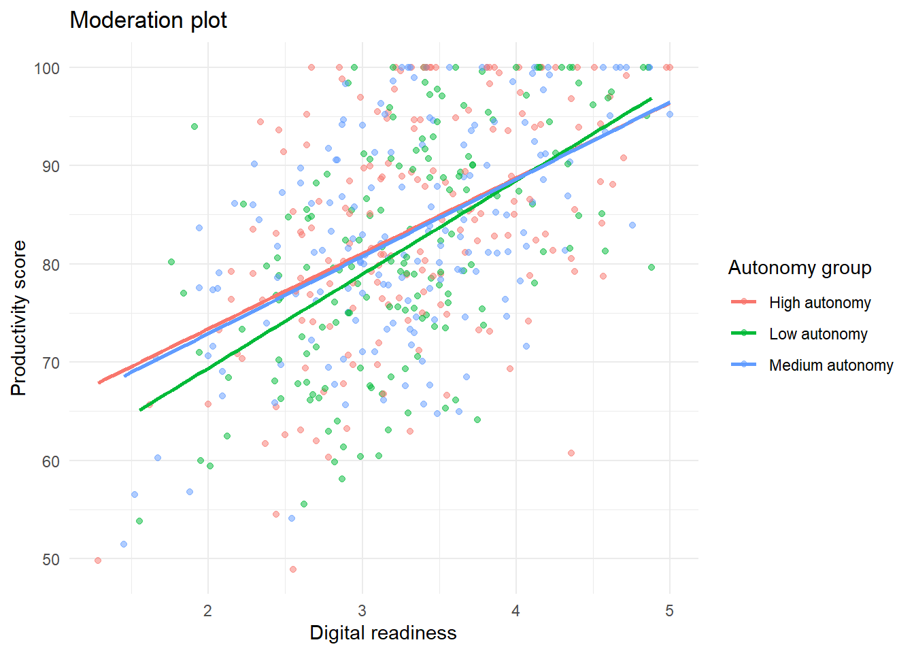

install.packages("tidyverse")
install.packages("readxl")
install.packages("janitor")
install.packages("broom")
install.packages("MASS")
install.packages("car")
install.packages("performance")
install.packages("gtsummary")
install.packages("gt")
install.packages("modelsummary")Advanced 02. Hồi quy Nâng cao
Advanced Regression Models
Tổng quan bài học
TipKết quả học tập (Learning Outcomes)
Sau khi hoàn thành bài học này, học viên có thể:
- Hiểu vì sao hồi quy tuyến tính (Linear Regression) không phù hợp cho mọi loại biến phụ thuộc
- Chọn mô hình hồi quy theo loại biến phụ thuộc
- Thực hiện hồi quy Logistic (Logistic Regression) cho biến nhị phân
- Thực hiện hồi quy thứ bậc (Ordinal Regression) cho biến có thứ tự
- Thực hiện hồi quy Poisson (Poisson Regression) cho dữ liệu đếm
- Hiểu logic phân tích trung gian (Mediation Analysis)
- Hiểu logic phân tích điều tiết (Moderation Analysis)
- Tạo bảng hồi quy học thuật (Academic Regression Table)
- Viết kết quả hồi quy nâng cao theo chuẩn học thuật
NoteLogic bài học (Module Logic)
Bài học này trả lời câu hỏi:
Khi biến phụ thuộc không phù hợp với hồi quy tuyến tính thông thường, ta nên chọn mô hình nào và trình bày kết quả ra sao?
Quy trình:
Research Question
↓
Outcome Type
↓
Model Selection
↓
Model Estimation
↓
Regression Table
↓
Model Interpretation
↓
Research Reporting1. Vì sao cần hồi quy nâng cao?
NoteKiến thức nền tảng (Knowledge Notes)
Là gì? (What?)
Hồi quy nâng cao (Advanced Regression) là nhóm mô hình hồi quy được thiết kế cho nhiều loại biến phụ thuộc khác nhau.
Không phải mọi biến phụ thuộc đều phù hợp với hồi quy tuyến tính (Linear Regression).
Tại sao cần? (Why?)
Nếu chọn sai mô hình:
- Hệ số có thể bị sai
- p-value có thể không đáng tin cậy
- Diễn giải kết quả có thể sai
- Kết luận nghiên cứu có thể không phù hợp
Khi nào dùng? (When?)
Khi biến phụ thuộc không phải là biến định lượng liên tục thông thường.
Thực hiện thế nào? (How?)
Chọn mô hình theo loại biến phụ thuộc:
| Loại biến phụ thuộc | Ví dụ | Mô hình phù hợp |
|---|---|---|
| Liên tục | satisfaction, productivity | Linear Regression |
| Nhị phân | adopted_ai: 0/1 | Logistic Regression |
| Thứ bậc | low/medium/high | Ordinal Regression |
| Dữ liệu đếm | số lần vắng mặt | Poisson Regression |
| Có trung gian | X → M → Y | Mediation Analysis |
| Có điều tiết | X × Z → Y | Moderation Analysis |
ImportantỨng dụng trong nghiên cứu (Research Application)
Hồi quy nâng cao thường được dùng trong:
- Nghiên cứu hành vi người học
- Nghiên cứu chấp nhận công nghệ
- Nghiên cứu giáo dục
- Nghiên cứu quản trị
- Khảo sát người dùng
- Nghiên cứu dự đoán hành vi
- Nghiên cứu có biến phụ thuộc nhị phân, thứ bậc hoặc dạng đếm
WarningSai lầm thường gặp (Common Mistakes)
Người học thường mắc lỗi:
- Dùng
lm()cho mọi loại biến phụ thuộc - Diễn giải odds ratio như hệ số tuyến tính
- Không kiểm tra loại biến phụ thuộc trước khi chọn mô hình
- Không phân biệt mediation và moderation
- Diễn giải kết quả hồi quy cắt ngang như quan hệ nhân quả
2. Chuẩn bị dữ liệu
NoteKiến thức nền tảng (Knowledge Notes)
Dữ liệu sử dụng
data/advance/module7_advanced_data.xlsxSheet sử dụng:
02_Advanced_RegressionFile này được thiết kế cho ví dụ công khai, không gắn với dữ liệu cá nhân hoặc dự án riêng.
Cài đặt package
Nạp package
library(tidyverse)
library(readxl)
library(janitor)
library(broom)
library(car)
library(performance)
library(gtsummary)
library(gt)Thiết lập đường dẫn dữ liệu
advanced_file <- if (file.exists("../data/advance/module7_advanced_data.xlsx")) {
"../data/advance/module7_advanced_data.xlsx"
} else if (file.exists("../data/advanced/module7_advanced_data.xlsx")) {
"../data/advanced/module7_advanced_data.xlsx"
} else if (file.exists("data/advance/module7_advanced_data.xlsx")) {
"data/advance/module7_advanced_data.xlsx"
} else {
"data/advanced/module7_advanced_data.xlsx"
}Nhập dữ liệu
adv_reg <- read_excel(
advanced_file,
sheet = "02_Advanced_Regression"
) |>
clean_names()Kiểm tra dữ liệu
glimpse(adv_reg)Rows: 500
Columns: 17
$ id <chr> "REG0001", "REG0002", "REG0003", "REG0004", "REG00…
$ school <chr> "School_9", "School_4", "School_8", "School_10", "…
$ gender <chr> "Female", "Male", "Male", "Male", "Female", "Femal…
$ age <dbl> 22, 32, 27, 43, 30, 22, 27, 34, 34, 32, 30, 22, 39…
$ experience_years <dbl> 5.3, 14.2, 12.6, 18.5, 7.1, 0.0, 0.0, 10.7, 8.8, 1…
$ training_hours <dbl> 32.3, 37.0, 24.9, 14.9, 25.8, 25.5, 31.4, 17.2, 18…
$ digital_readiness <dbl> 3.44, 4.58, 3.22, 3.71, 1.66, 3.48, 3.52, 3.03, 3.…
$ leadership_support <dbl> 5.00, 3.85, 4.26, 3.63, 3.83, 3.50, 2.74, 3.34, 3.…
$ workload <dbl> 1.99, 4.05, 2.94, 1.55, 3.79, 1.70, 1.22, 1.98, 1.…
$ motivation <dbl> 4.08, 4.51, 4.02, 4.79, 2.86, 4.01, 3.45, 4.36, 4.…
$ job_satisfaction <dbl> 5.00, 3.78, 4.00, 3.23, 2.19, 3.54, 4.55, 3.58, 4.…
$ adopted_ai <dbl> 1, 1, 1, 1, 1, 1, 1, 1, 1, 1, 0, 0, 0, 0, 1, 0, 0,…
$ ordinal_performance <dbl> 4, 5, 4, 3, 1, 3, 3, 3, 2, 4, 2, 1, 2, 2, 3, 3, 4,…
$ absences_count <dbl> 0, 0, 2, 0, 19, 0, 0, 1, 0, 9, 4, 4, 1, 0, 3, 7, 2…
$ productivity_score <dbl> 94.83, 93.42, 100.00, 93.51, 70.34, 100.00, 84.47,…
$ mediator_engagement <dbl> 5.00, 5.00, 5.00, 5.00, 4.10, 4.77, 3.78, 4.50, 4.…
$ moderator_autonomy <dbl> 3.04, 3.25, 3.63, 3.38, 3.26, 4.74, 4.22, 2.06, 3.…names(adv_reg) [1] "id" "school" "gender"
[4] "age" "experience_years" "training_hours"
[7] "digital_readiness" "leadership_support" "workload"
[10] "motivation" "job_satisfaction" "adopted_ai"
[13] "ordinal_performance" "absences_count" "productivity_score"
[16] "mediator_engagement" "moderator_autonomy" 3. Chọn mô hình theo loại biến phụ thuộc
TipKết quả học tập (Learning Outcomes)
Sau phần này, học viên có thể:
- Nhận diện loại biến phụ thuộc
- Chọn mô hình hồi quy phù hợp
- Tránh dùng sai mô hình
NoteKiến thức nền tảng (Knowledge Notes)
Là gì? (What?)
Mô hình hồi quy phải phù hợp với bản chất của biến phụ thuộc.
Tại sao cần? (Why?)
Hồi quy tuyến tính giả định biến phụ thuộc là biến liên tục. Nếu biến phụ thuộc là 0/1, thứ bậc hoặc dữ liệu đếm, ta cần mô hình khác.
Cách chọn nhanh
| Câu hỏi nghiên cứu | Outcome | Mô hình |
|---|---|---|
| Có hay không? | 0/1 | Logistic |
| Mức thấp/vừa/cao? | Ordinal | Ordinal |
| Bao nhiêu lần? | Count | Poisson |
| Tại sao X ảnh hưởng Y? | Mediator | Mediation |
| Khi nào X ảnh hưởng Y mạnh hơn? | Moderator | Moderation |
Kiểm tra nhanh các biến outcome
adv_reg |>
select(
adopted_ai,
ordinal_performance,
absences_count,
productivity_score,
mediator_engagement,
moderator_autonomy
) |>
summary() adopted_ai ordinal_performance absences_count productivity_score
Min. :0.000 Min. :1.000 Min. : 0.000 Min. : 48.93
1st Qu.:0.000 1st Qu.:2.000 1st Qu.: 0.000 1st Qu.: 75.19
Median :0.000 Median :3.000 Median : 2.000 Median : 82.41
Mean :0.392 Mean :2.824 Mean : 2.842 Mean : 82.73
3rd Qu.:1.000 3rd Qu.:4.000 3rd Qu.: 4.000 3rd Qu.: 91.65
Max. :1.000 Max. :5.000 Max. :25.000 Max. :100.00
mediator_engagement moderator_autonomy
Min. :2.120 Min. :1.000
1st Qu.:3.720 1st Qu.:2.777
Median :4.165 Median :3.240
Mean :4.153 Mean :3.234
3rd Qu.:4.700 3rd Qu.:3.700
Max. :5.000 Max. :5.000 - Outcome 0/1 → Logistic Regression
- Outcome có thứ tự → Ordinal Regression
- Outcome dạng đếm → Poisson Regression
- Cơ chế trung gian → Mediation
- Tác động phụ thuộc bối cảnh → Moderation
4. Hồi quy Logistic (Logistic Regression)
TipKết quả học tập (Learning Outcomes)
Sau phần này, học viên có thể:
- Hiểu hồi quy Logistic
- Biết khi nào dùng hồi quy Logistic
- Chạy mô hình Logistic bằng R
- Diễn giải Odds Ratio
- Viết kết quả Logistic Regression
NoteKiến thức nền tảng (Knowledge Notes)
Là gì? (What?)
Hồi quy Logistic (Logistic Regression) dùng khi biến phụ thuộc là nhị phân:
0 = No
1 = YesTại sao cần? (Why?)
Hồi quy tuyến tính không phù hợp với outcome 0/1 vì dự đoán có thể nhỏ hơn 0 hoặc lớn hơn 1.
Khi nào dùng? (When?)
Dùng khi câu hỏi nghiên cứu là:
Yếu tố nào dự đoán khả năng một người sẽ thực hiện hành vi?Thực hiện thế nào? (How?)
Trong R dùng:
glm(..., family = binomial)Ước lượng mô hình Logistic
logit_model <- glm(
adopted_ai ~ digital_readiness + leadership_support + workload + training_hours,
data = adv_reg,
family = binomial
)
summary(logit_model)
Call:
glm(formula = adopted_ai ~ digital_readiness + leadership_support +
workload + training_hours, family = binomial, data = adv_reg)
Coefficients:
Estimate Std. Error z value Pr(>|z|)
(Intercept) -4.74563 0.91398 -5.192 2.08e-07 ***
digital_readiness 0.75258 0.14693 5.122 3.02e-07 ***
leadership_support 0.58312 0.16294 3.579 0.000345 ***
workload -0.40023 0.12330 -3.246 0.001171 **
training_hours 0.04634 0.01276 3.631 0.000282 ***
---
Signif. codes: 0 '***' 0.001 '**' 0.01 '*' 0.05 '.' 0.1 ' ' 1
(Dispersion parameter for binomial family taken to be 1)
Null deviance: 669.63 on 499 degrees of freedom
Residual deviance: 607.42 on 495 degrees of freedom
AIC: 617.42
Number of Fisher Scoring iterations: 4Bảng Odds Ratio
logit_or <- tidy(
logit_model,
exponentiate = TRUE,
conf.int = TRUE
)
logit_orBảng trình bày bằng gtsummary
tbl_regression(
logit_model,
exponentiate = TRUE
) |>
bold_labels()| Characteristic | OR | 95% CI | p-value |
|---|---|---|---|
| digital_readiness | 2.12 | 1.60, 2.85 | <0.001 |
| leadership_support | 1.79 | 1.31, 2.48 | <0.001 |
| workload | 0.67 | 0.52, 0.85 | 0.001 |
| training_hours | 1.05 | 1.02, 1.07 | <0.001 |
| Abbreviations: CI = Confidence Interval, OR = Odds Ratio | |||
ImportantDiễn giải kết quả (Interpretation)
Trong hồi quy Logistic, hệ số thường được diễn giải bằng Odds Ratio.
| Odds Ratio | Diễn giải |
|---|---|
| OR = 1 | Không thay đổi odds |
| OR > 1 | Odds tăng |
| OR < 1 | Odds giảm |
Ví dụ:
OR = 1.50có thể diễn giải là odds của outcome tăng 50% khi predictor tăng 1 đơn vị, giữ các biến khác không đổi.
WarningSai lầm thường gặp (Common Mistakes)
Không nên diễn giải:
OR = 1.50 nghĩa là xác suất tăng 50%.Odds không giống probability.
Cần viết cẩn trọng:
The odds were 1.50 times higher.5. Hồi quy thứ bậc (Ordinal Regression)
TipKết quả học tập (Learning Outcomes)
Sau phần này, học viên có thể:
- Hiểu biến phụ thuộc thứ bậc (Ordinal Outcome)
- Biết khi nào dùng hồi quy thứ bậc
- Chạy mô hình bằng
MASS::polr() - Diễn giải kết quả ở mức cơ bản
NoteKiến thức nền tảng (Knowledge Notes)
Là gì? (What?)
Hồi quy thứ bậc (Ordinal Regression) dùng khi biến phụ thuộc có thứ tự tự nhiên.
Ví dụ:
1 = Low
2 = Medium
3 = High
4 = Very highTại sao cần? (Why?)
Outcome thứ bậc không phải là biến liên tục thật sự. Khoảng cách giữa các mức có thể không bằng nhau.
Khi nào dùng? (When?)
Dùng khi outcome là mức đánh giá, mức hài lòng, mức thành tích hoặc mức đồng ý có thứ tự.
Chuẩn bị biến outcome
adv_reg <- adv_reg |>
mutate(
ordinal_performance_factor = ordered(ordinal_performance)
)Ước lượng mô hình Ordinal
if (requireNamespace("MASS", quietly = TRUE)) {
ordinal_model <- MASS::polr(
ordinal_performance_factor ~ digital_readiness + leadership_support + motivation,
data = adv_reg,
Hess = TRUE
)
summary(ordinal_model)
}Call:
MASS::polr(formula = ordinal_performance_factor ~ digital_readiness +
leadership_support + motivation, data = adv_reg, Hess = TRUE)
Coefficients:
Value Std. Error t value
digital_readiness 0.8146 0.1322 6.163
leadership_support 0.2129 0.1481 1.437
motivation 0.3108 0.1563 1.988
Intercepts:
Value Std. Error t value
1|2 2.0223 0.6753 2.9948
2|3 3.8795 0.6789 5.7141
3|4 5.7086 0.7067 8.0776
4|5 8.8861 0.8070 11.0115
Residual Deviance: 1279.316
AIC: 1293.316 Bảng kết quả
if (exists("ordinal_model")) {
tidy(
ordinal_model,
conf.int = TRUE,
exponentiate = TRUE
)
}
ImportantDiễn giải kết quả (Interpretation)
Trong ordinal regression, hệ số dương thường gợi ý predictor liên quan đến khả năng cao hơn của việc thuộc nhóm outcome cao hơn.
Tuy nhiên, diễn giải cần thận trọng và nên kiểm tra giả định proportional odds nếu dùng cho nghiên cứu công bố.
6. Hồi quy Poisson (Poisson Regression)
TipKết quả học tập (Learning Outcomes)
Sau phần này, học viên có thể:
- Hiểu dữ liệu đếm (Count Data)
- Biết khi nào dùng hồi quy Poisson
- Chạy mô hình Poisson bằng R
- Diễn giải Incident Rate Ratio
- Nhận biết vấn đề overdispersion
NoteKiến thức nền tảng (Knowledge Notes)
Là gì? (What?)
Hồi quy Poisson (Poisson Regression) dùng cho biến phụ thuộc dạng đếm.
Ví dụ:
- Số lần vắng mặt
- Số lỗi
- Số lượt truy cập
- Số lần sử dụng hệ thống
- Số sự kiện xảy ra
Tại sao cần? (Why?)
Dữ liệu đếm thường không phù hợp với hồi quy tuyến tính vì:
- Không thể nhỏ hơn 0
- Phân phối thường lệch phải
- Phương sai có thể tăng theo trung bình
Thực hiện thế nào? (How?)
Dùng:
glm(..., family = poisson)Ước lượng mô hình Poisson
poisson_model <- glm(
absences_count ~ workload + job_satisfaction + training_hours,
data = adv_reg,
family = poisson
)
summary(poisson_model)
Call:
glm(formula = absences_count ~ workload + job_satisfaction +
training_hours, family = poisson, data = adv_reg)
Coefficients:
Estimate Std. Error z value Pr(>|z|)
(Intercept) 0.962017 0.222780 4.318 1.57e-05 ***
workload 0.296398 0.035762 8.288 < 2e-16 ***
job_satisfaction -0.224937 0.042473 -5.296 1.18e-07 ***
training_hours -0.003685 0.003344 -1.102 0.27
---
Signif. codes: 0 '***' 0.001 '**' 0.01 '*' 0.05 '.' 0.1 ' ' 1
(Dispersion parameter for poisson family taken to be 1)
Null deviance: 1915.0 on 499 degrees of freedom
Residual deviance: 1763.6 on 496 degrees of freedom
AIC: 2828.6
Number of Fisher Scoring iterations: 5Incident Rate Ratio
poisson_irr <- tidy(
poisson_model,
exponentiate = TRUE,
conf.int = TRUE
)
poisson_irrKiểm tra overdispersion đơn giản
overdispersion_ratio <- sum(residuals(poisson_model, type = "pearson")^2) /
poisson_model$df.residual
overdispersion_ratio[1] 4.192694
ImportantDiễn giải kết quả (Interpretation)
Trong Poisson Regression, hệ số đã exponentiate được diễn giải là Incident Rate Ratio (IRR).
| IRR | Diễn giải |
|---|---|
| IRR = 1 | Không thay đổi rate |
| IRR > 1 | Rate tăng |
| IRR < 1 | Rate giảm |
7. Phân tích trung gian (Mediation Analysis)
TipKết quả học tập (Learning Outcomes)
Sau phần này, học viên có thể:
- Hiểu khái niệm biến trung gian (Mediator)
- Phân biệt direct effect, indirect effect và total effect
- Chạy phân tích trung gian cơ bản bằng hồi quy
- Diễn giải kết quả trung gian ở mức nhập môn
NoteKiến thức nền tảng (Knowledge Notes)
Là gì? (What?)
Phân tích trung gian (Mediation Analysis) kiểm tra liệu tác động của X lên Y có đi qua một biến trung gian M hay không.
Cấu trúc:
X → M → YTại sao cần? (Why?)
Mediation giúp trả lời câu hỏi:
Tại sao X liên quan đến Y?Khi nào dùng? (When?)
Dùng khi lý thuyết cho rằng một biến giải thích cơ chế tác động giữa predictor và outcome.
Mô hình đường a: X → M
med_model_a <- lm(
mediator_engagement ~ leadership_support,
data = adv_reg
)
summary(med_model_a)
Call:
lm(formula = mediator_engagement ~ leadership_support, data = adv_reg)
Residuals:
Min 1Q Median 3Q Max
-1.70399 -0.35430 0.02278 0.38957 1.27518
Coefficients:
Estimate Std. Error t value Pr(>|t|)
(Intercept) 2.26806 0.13834 16.39 <2e-16 ***
leadership_support 0.54560 0.03943 13.84 <2e-16 ***
---
Signif. codes: 0 '***' 0.001 '**' 0.01 '*' 0.05 '.' 0.1 ' ' 1
Residual standard error: 0.5406 on 498 degrees of freedom
Multiple R-squared: 0.2777, Adjusted R-squared: 0.2762
F-statistic: 191.5 on 1 and 498 DF, p-value: < 2.2e-16Mô hình đường b và c’: X + M → Y
med_model_b <- lm(
productivity_score ~ leadership_support + mediator_engagement,
data = adv_reg
)
summary(med_model_b)
Call:
lm(formula = productivity_score ~ leadership_support + mediator_engagement,
data = adv_reg)
Residuals:
Min 1Q Median 3Q Max
-32.151 -7.467 0.319 7.853 25.479
Coefficients:
Estimate Std. Error t value Pr(>|t|)
(Intercept) 52.7355 3.3807 15.599 < 2e-16 ***
leadership_support 4.1776 0.9137 4.572 6.10e-06 ***
mediator_engagement 3.7464 0.8825 4.245 2.61e-05 ***
---
Signif. codes: 0 '***' 0.001 '**' 0.01 '*' 0.05 '.' 0.1 ' ' 1
Residual standard error: 10.65 on 497 degrees of freedom
Multiple R-squared: 0.1419, Adjusted R-squared: 0.1385
F-statistic: 41.11 on 2 and 497 DF, p-value: < 2.2e-16Tính indirect effect đơn giản
a_path <- coef(med_model_a)["leadership_support"]
b_path <- coef(med_model_b)["mediator_engagement"]
indirect_effect <- a_path * b_path
indirect_effectleadership_support
2.044031
ImportantDiễn giải kết quả (Interpretation)
Nếu:
leadership_support → mediator_engagementvà:
mediator_engagement → productivity_scoređều có ý nghĩa thống kê, và indirect effect khác 0, có thể có bằng chứng về vai trò trung gian.
Trong nghiên cứu công bố, nên dùng bootstrap confidence interval cho indirect effect.
8. Phân tích điều tiết (Moderation Analysis)
TipKết quả học tập (Learning Outcomes)
Sau phần này, học viên có thể:
- Hiểu biến điều tiết (Moderator)
- Hiểu interaction effect
- Chạy mô hình có tương tác bằng R
- Diễn giải interaction term
- Trực quan hóa moderation
NoteKiến thức nền tảng (Knowledge Notes)
Là gì? (What?)
Phân tích điều tiết (Moderation Analysis) kiểm tra liệu mối quan hệ giữa X và Y có thay đổi theo mức của Z hay không.
Cấu trúc:
X × Z → YTại sao cần? (Why?)
Moderation giúp trả lời câu hỏi:
Khi nào hoặc trong điều kiện nào X liên quan mạnh hơn đến Y?Khi nào dùng? (When?)
Dùng khi có lý thuyết cho rằng tác động của predictor phụ thuộc vào một biến bối cảnh.
Ước lượng mô hình moderation
moderation_model <- lm(
productivity_score ~ digital_readiness * moderator_autonomy,
data = adv_reg
)
summary(moderation_model)
Call:
lm(formula = productivity_score ~ digital_readiness * moderator_autonomy,
data = adv_reg)
Residuals:
Min 1Q Median 3Q Max
-30.595 -6.811 -0.187 7.400 24.403
Coefficients:
Estimate Std. Error t value Pr(>|t|)
(Intercept) 31.2286 10.5929 2.948 0.00335 **
digital_readiness 14.4318 3.1130 4.636 4.55e-06 ***
moderator_autonomy 7.3736 3.1842 2.316 0.02098 *
digital_readiness:moderator_autonomy -1.8692 0.9346 -2.000 0.04604 *
---
Signif. codes: 0 '***' 0.001 '**' 0.01 '*' 0.05 '.' 0.1 ' ' 1
Residual standard error: 9.818 on 496 degrees of freedom
Multiple R-squared: 0.2716, Adjusted R-squared: 0.2672
F-statistic: 61.65 on 3 and 496 DF, p-value: < 2.2e-16Bảng hệ số
tidy(moderation_model, conf.int = TRUE)Trực quan hóa moderation
moderation_plot_data <- adv_reg |>
mutate(
autonomy_group = case_when(
moderator_autonomy <= quantile(moderator_autonomy, 0.33, na.rm = TRUE) ~ "Low autonomy",
moderator_autonomy >= quantile(moderator_autonomy, 0.67, na.rm = TRUE) ~ "High autonomy",
TRUE ~ "Medium autonomy"
)
)
ggplot(
moderation_plot_data,
aes(
x = digital_readiness,
y = productivity_score,
color = autonomy_group
)
) +
geom_point(alpha = 0.5) +
geom_smooth(method = "lm", se = FALSE) +
labs(
title = "Moderation plot",
x = "Digital readiness",
y = "Productivity score",
color = "Autonomy group"
) +
theme_minimal()
ImportantDiễn giải kết quả (Interpretation)
Nếu interaction term có ý nghĩa thống kê, điều đó gợi ý rằng mối quan hệ giữa predictor và outcome thay đổi theo mức của moderator.
Ví dụ:
Digital readiness may be more strongly associated with productivity when autonomy is high.9. Trình bày bảng hồi quy học thuật
TipKết quả học tập (Learning Outcomes)
Sau phần này, học viên có thể:
- Hiểu vai trò của bảng hồi quy (Regression Table) trong bài báo khoa học
- Tạo bảng hồi quy bằng
gtsummary - So sánh nhiều mô hình hồi quy
- Trình bày Odds Ratio và Incident Rate Ratio
- Xuất bảng hồi quy sang HTML, Word hoặc Excel
- Viết ghi chú bảng (Table Notes) đúng chuẩn học thuật
NoteKiến thức nền tảng (Knowledge Notes)
Là gì? (What?)
Bảng hồi quy học thuật (Academic Regression Table) là bảng tóm tắt kết quả mô hình hồi quy theo định dạng dễ đọc, có thể dùng trong luận văn, luận án, báo cáo nghiên cứu hoặc bài báo khoa học.
Tại sao cần? (Why?)
Output mặc định từ R như summary(model) rất hữu ích khi phân tích, nhưng không phù hợp để đưa trực tiếp vào bài báo.
Một bảng hồi quy tốt nên có:
- Tên biến rõ ràng
- Hệ số hồi quy hoặc Odds Ratio
- Khoảng tin cậy (Confidence Interval)
- p-value
- Cỡ mẫu
- Ghi chú bảng
- Thông tin mô hình
Khi nào dùng? (When?)
Dùng sau khi đã ước lượng mô hình và cần trình bày kết quả cho người đọc.
Thực hiện thế nào? (How?)
Trong R, có thể dùng gtsummary, modelsummary, broom, gt hoặc flextable.
ImportantỨng dụng trong nghiên cứu (Research Application)
Bảng hồi quy thường xuất hiện trong phần Results của bài báo khoa học, luận văn, luận án và báo cáo nghiên cứu định lượng.
9.1 Regression table cho hồi quy Logistic
logit_table <- tbl_regression(
logit_model,
exponentiate = TRUE
) |>
bold_labels()
logit_table| Characteristic | OR | 95% CI | p-value |
|---|---|---|---|
| digital_readiness | 2.12 | 1.60, 2.85 | <0.001 |
| leadership_support | 1.79 | 1.31, 2.48 | <0.001 |
| workload | 0.67 | 0.52, 0.85 | 0.001 |
| training_hours | 1.05 | 1.02, 1.07 | <0.001 |
| Abbreviations: CI = Confidence Interval, OR = Odds Ratio | |||
ImportantDiễn giải kết quả (Interpretation)
Nếu bảng hiển thị:
OR = 1.45có thể hiểu là odds của outcome tăng 1.45 lần khi predictor tăng 1 đơn vị, giữ các biến khác không đổi.
Không nên viết:
Probability increased by 45%.Nên viết:
The odds were 1.45 times higher.9.2 Regression table cho hồi quy Poisson
poisson_table <- tbl_regression(
poisson_model,
exponentiate = TRUE
) |>
bold_labels()
poisson_table| Characteristic | IRR | 95% CI | p-value |
|---|---|---|---|
| workload | 1.35 | 1.25, 1.44 | <0.001 |
| job_satisfaction | 0.80 | 0.73, 0.87 | <0.001 |
| training_hours | 1.00 | 0.99, 1.00 | 0.3 |
| Abbreviations: CI = Confidence Interval, IRR = Incidence Rate Ratio | |||
ImportantDiễn giải kết quả (Interpretation)
Nếu bảng hiển thị:
IRR = 1.20có thể hiểu là expected count hoặc event rate tăng khoảng 20% khi predictor tăng 1 đơn vị, giữ các biến khác không đổi.
9.3 Regression table cho mô hình điều tiết
moderation_table <- tbl_regression(
moderation_model
) |>
bold_labels()
moderation_table| Characteristic | Beta | 95% CI | p-value |
|---|---|---|---|
| digital_readiness | 14 | 8.3, 21 | <0.001 |
| moderator_autonomy | 7.4 | 1.1, 14 | 0.021 |
| digital_readiness * moderator_autonomy | -1.9 | -3.7, -0.03 | 0.046 |
| Abbreviation: CI = Confidence Interval | |||
WarningSai lầm thường gặp (Common Mistakes)
Khi mô hình có interaction, không nên chỉ diễn giải main effects.
Cần xem:
- Main effect của predictor
- Main effect của moderator
- Interaction term
- Biểu đồ moderation plot
9.4 So sánh nhiều mô hình hồi quy
NoteKiến thức nền tảng (Knowledge Notes)
So sánh nhiều mô hình giúp đánh giá việc thêm biến dự báo có cải thiện mô hình hay không.
Trong nghiên cứu, ta thường xây dựng mô hình theo từng bước:
Model 1: Control variables
Model 2: Main predictors
Model 3: Extended predictorsTạo ba mô hình Logistic
logit_model_1 <- glm(
adopted_ai ~ digital_readiness,
data = adv_reg,
family = binomial
)
logit_model_2 <- glm(
adopted_ai ~ digital_readiness + leadership_support,
data = adv_reg,
family = binomial
)
logit_model_3 <- glm(
adopted_ai ~ digital_readiness + leadership_support + workload + training_hours,
data = adv_reg,
family = binomial
)Gộp bảng bằng gtsummary
logit_model_comparison <- tbl_merge(
tbls = list(
tbl_regression(
logit_model_1,
exponentiate = TRUE
),
tbl_regression(
logit_model_2,
exponentiate = TRUE
),
tbl_regression(
logit_model_3,
exponentiate = TRUE
)
),
tab_spanner = c(
"Model 1",
"Model 2",
"Model 3"
)
)
logit_model_comparison| Characteristic |
Model 1
|
Model 2
|
Model 3
|
||||||
|---|---|---|---|---|---|---|---|---|---|
| OR | 95% CI | p-value | OR | 95% CI | p-value | OR | 95% CI | p-value | |
| digital_readiness | 1.96 | 1.49, 2.58 | <0.001 | 2.04 | 1.55, 2.70 | <0.001 | 2.12 | 1.60, 2.85 | <0.001 |
| leadership_support | 1.78 | 1.31, 2.44 | <0.001 | 1.79 | 1.31, 2.48 | <0.001 | |||
| workload | 0.67 | 0.52, 0.85 | 0.001 | ||||||
| training_hours | 1.05 | 1.02, 1.07 | <0.001 | ||||||
| Abbreviations: CI = Confidence Interval, OR = Odds Ratio | |||||||||
9.5 Tạo bảng bằng broom và gt
logit_gt_table <- tidy(
logit_model,
exponentiate = TRUE,
conf.int = TRUE
) |>
mutate(
across(
where(is.numeric),
~ round(., 3)
)
) |>
gt() |>
tab_header(
title = "Logistic Regression Table",
subtitle = "Outcome: AI Adoption"
)
logit_gt_table| Logistic Regression Table | ||||||
| Outcome: AI Adoption | ||||||
| term | estimate | std.error | statistic | p.value | conf.low | conf.high |
|---|---|---|---|---|---|---|
| (Intercept) | 0.009 | 0.914 | -5.192 | 0.000 | 0.001 | 0.050 |
| digital_readiness | 2.122 | 0.147 | 5.122 | 0.000 | 1.600 | 2.848 |
| leadership_support | 1.792 | 0.163 | 3.579 | 0.000 | 1.307 | 2.477 |
| workload | 0.670 | 0.123 | -3.246 | 0.001 | 0.525 | 0.851 |
| training_hours | 1.047 | 0.013 | 3.631 | 0.000 | 1.022 | 1.074 |
9.6 Tùy chọn nâng cao với modelsummary
install.packages("modelsummary")if (requireNamespace("modelsummary", quietly = TRUE)) {
modelsummary::modelsummary(
list(
"Model 1" = logit_model_1,
"Model 2" = logit_model_2,
"Model 3" = logit_model_3
),
exponentiate = TRUE
)
}| Model 1 | Model 2 | Model 3 | |
|---|---|---|---|
| (Intercept) | 0.069 | 0.008 | 0.009 |
| (0.033) | (0.006) | (0.008) | |
| digital_readiness | 1.956 | 2.035 | 2.122 |
| (0.273) | (0.289) | (0.312) | |
| leadership_support | 1.780 | 1.792 | |
| (0.282) | (0.292) | ||
| workload | 0.670 | ||
| (0.083) | |||
| training_hours | 1.047 | ||
| (0.013) | |||
| Num.Obs. | 500 | 500 | 500 |
| AIC | 648.9 | 637.2 | 617.4 |
| BIC | 657.4 | 649.8 | 638.5 |
| Log.Lik. | -322.463 | -315.602 | -303.709 |
| RMSE | 0.48 | 0.47 | 0.46 |
9.7 Xuất bảng hồi quy
dir.create("output", showWarnings = FALSE)
logit_gt_table |>
gt::gtsave(
"output/advanced_logistic_regression_table.html"
)modelsummary::modelsummary(
list(
"Model 1" = logit_model_1,
"Model 2" = logit_model_2,
"Model 3" = logit_model_3
),
exponentiate = TRUE,
output = "output/advanced_logistic_regression_table.docx"
)9.8 Checklist cho bảng hồi quy
Một bảng hồi quy tốt nên có:
| Thành phần | Nên có |
|---|---|
| Tên biến rõ ràng | Có |
| Hệ số hoặc OR/IRR | Có |
| Khoảng tin cậy | Có |
| p-value | Có |
| Cỡ mẫu | Có |
| Thông tin mô hình | Có |
| Ghi chú bảng | Có |
| Diễn giải trong text | Có |
ImportantVí dụ ghi chú bảng (Table Note Example)
Note. Values are reported as odds ratios. CI = confidence interval. OR values greater than 1 indicate higher odds of the outcome. Models were estimated using logistic regression.9.9 Ví dụ viết kết quả từ bảng hồi quy
ImportantVí dụ viết học thuật (Academic Reporting Example)
Table 2 presents the logistic regression models predicting AI adoption. In Model 1, digital readiness was positively associated with the odds of AI adoption. After adding leadership support in Model 2, the association between digital readiness and AI adoption remained positive. The full model, which included workload and training hours, showed that digital readiness and leadership support were the most consistent predictors of AI adoption.
WarningSai lầm thường gặp (Common Mistakes)
Không nên để bảng tự nói thay phần diễn giải.
Sau mỗi bảng hồi quy, cần có đoạn text giải thích:
- Kết quả chính là gì?
- Predictor nào quan trọng?
- Mô hình nào tốt hơn?
- Ý nghĩa thực tiễn là gì?
- Có giới hạn nào khi diễn giải không?
10. So sánh các mô hình hồi quy nâng cao
NoteKiến thức nền tảng (Knowledge Notes)
Bảng dưới đây giúp chọn mô hình phù hợp.
| Mục tiêu phân tích | Biến phụ thuộc | Mô hình đề xuất | Hàm R |
|---|---|---|---|
| Dự đoán outcome liên tục | Continuous | Linear Regression | lm() |
| Dự đoán outcome 0/1 | Binary | Logistic Regression | glm(..., binomial) |
| Dự đoán outcome thứ bậc | Ordered | Ordinal Regression | MASS::polr() |
| Dự đoán dữ liệu đếm | Count | Poisson Regression | glm(..., poisson) |
| Kiểm tra cơ chế | Mediator | Mediation | lm() / bootstrap |
| Kiểm tra điều kiện tác động | Moderator | Moderation | lm(y ~ x*z) |
- Chọn mô hình theo loại biến phụ thuộc.
- Logistic Regression dùng cho outcome nhị phân.
- Ordinal Regression dùng cho outcome có thứ tự.
- Poisson Regression dùng cho dữ liệu đếm.
- Mediation trả lời câu hỏi “tại sao”.
- Moderation trả lời câu hỏi “khi nào”.
- Không diễn giải hồi quy cắt ngang như bằng chứng nhân quả mạnh.
11. Viết kết quả học thuật
NoteKiến thức nền tảng (Knowledge Notes)
Là gì? (What?)
Viết kết quả học thuật là chuyển output mô hình thành đoạn văn rõ ràng, chính xác và thận trọng.
Nguyên tắc
- Nêu mô hình đã dùng
- Nêu biến phụ thuộc
- Nêu predictors chính
- Báo cáo hệ số phù hợp
- Không diễn giải quá mức
- Tránh ngôn ngữ nhân quả nếu thiết kế nghiên cứu không hỗ trợ
Template hồi quy Logistic
A logistic regression was conducted to examine predictors of [binary outcome]. The results indicated that [predictor] was associated with higher odds of [outcome], OR = [value], 95% CI [lower, upper].Template hồi quy Poisson
A Poisson regression was estimated to examine predictors of [count outcome]. The results showed that [predictor] was associated with the expected count of [outcome], IRR = [value], 95% CI [lower, upper].Template Mediation
The mediation analysis suggested that [mediator] may explain part of the association between [predictor] and [outcome]. However, this result should be interpreted cautiously given the study design.Template Moderation
The interaction between [predictor] and [moderator] was statistically significant, suggesting that the association between [predictor] and [outcome] varied across levels of [moderator].
WarningSai lầm thường gặp (Common Mistakes)
Không nên viết:
X caused Y.nếu dữ liệu là khảo sát cắt ngang.
Nên viết:
X was associated with Y.hoặc:
X significantly predicted Y in the estimated model.12. Bài tập thực hành
ImportantBài tập thực hành (Practice Exercise)
Sử dụng sheet 02_Advanced_Regression, hãy thực hiện:
- Xác định loại biến phụ thuộc của
adopted_ai. - Chạy hồi quy Logistic cho
adopted_ai. - Diễn giải odds ratio.
- Xác định loại biến phụ thuộc của
ordinal_performance. - Chạy hồi quy thứ bậc.
- Xác định loại biến phụ thuộc của
absences_count. - Chạy hồi quy Poisson.
- Kiểm tra overdispersion.
- Chạy mô hình trung gian.
- Chạy mô hình điều tiết.
- Tạo regression table.
- Vẽ moderation plot.
- Viết một đoạn kết quả học thuật cho một mô hình.
13. Thử thách
WarningThử thách (Challenge)
Tình huống
Một nhà nghiên cứu có ba biến phụ thuộc:
adopted_ai = 0/1
performance_level = 1/2/3/4/5
number_of_absences = 0, 1, 2, ...Câu hỏi
- Mỗi biến nên dùng mô hình nào?
- Vì sao không nên dùng
lm()cho cả ba? - Hệ số trong logistic regression nên diễn giải như thế nào?
- Khi nào cần mediation?
- Khi nào cần moderation?
- Regression table nên có các thành phần nào?
TipGợi ý trả lời (Suggested Solution)
adopted_ai→ Logistic Regression.performance_level→ Ordinal Regression.number_of_absences→ Poisson Regression.- Không dùng
lm()cho cả ba vì bản chất biến phụ thuộc khác nhau. - Logistic Regression nên diễn giải bằng odds ratio.
- Mediation dùng khi muốn hiểu cơ chế.
- Moderation dùng khi muốn hiểu điều kiện làm thay đổi mối quan hệ.
- Regression table nên có hệ số, CI, p-value, N, model fit và ghi chú bảng.
14. Dự án nhỏ
ImportantDự án nhỏ (Mini Project)
Chủ đề
Báo cáo hồi quy nâng cao
(Advanced Regression Report)
Sản phẩm đầu ra
Học viên cần tạo:
Advanced_Regression_Report.htmlNội dung báo cáo
- Research question
- Outcome type identification
- Logistic regression model
- Ordinal regression model
- Poisson regression model
- Mediation model
- Moderation model
- Regression tables
- Model interpretation
- Academic reporting
- Method selection reflection
15. Điểm cần ghi nhớ
- Không phải mọi outcome đều phù hợp với hồi quy tuyến tính.
- Logistic Regression dùng cho biến phụ thuộc nhị phân.
- Ordinal Regression dùng cho biến phụ thuộc có thứ tự.
- Poisson Regression dùng cho biến phụ thuộc dạng đếm.
- Odds ratio không phải là probability.
- Incident rate ratio dùng để diễn giải Poisson Regression.
- Mediation giải thích cơ chế.
- Moderation giải thích điều kiện.
- Regression table giúp trình bày kết quả chuyên nghiệp.
- Chọn mô hình phải dựa vào câu hỏi nghiên cứu và loại biến phụ thuộc.
16. Bước tiếp theo
NoteBước tiếp theo (What Next?)
Sau khi hoàn thành phần này, học viên nên:
- Ghi nhớ cách chọn mô hình theo outcome.
- Thực hành diễn giải odds ratio và IRR.
- Phân biệt mediation và moderation.
- Tạo regression table cho các mô hình.
- Chuyển sang:
Trong phần tiếp theo, chúng ta sẽ học các mô hình hồi quy điều chuẩn (Regularized Regression) để xử lý nhiều predictors, đa cộng tuyến và bài toán prediction.